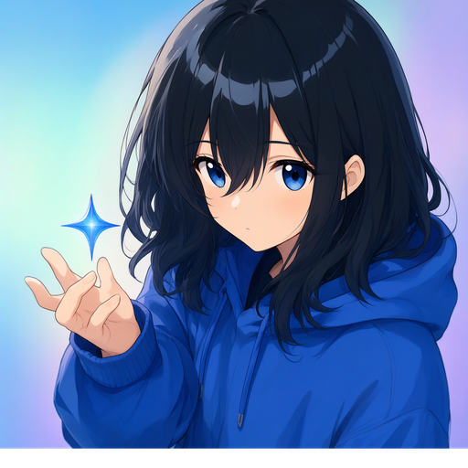

Lumina Virtual Pet
›
打招呼
聊聊天
挥挥手
讲笑话
😺
😸
😻
😽
🙀
😿
❤️
✨
🌟
🎵
🌸
🎀
🐟
🍰
☕
🌙
☀️
💤
👍
🎉
🤔
+
对话
›
更多
›
添加
上传文件或图片
Ctrl+1
截图提问
Ctrl+4
更多
增强提示词
Lucky Agent
关闭
关闭
标准
目标
任务
思考
表情
文件
实时语音对话
AI 操作电脑
胶囊
对话产物
0
›
技能
0
›
最近文件
0
›
对话产物
工作台
搜索或输入网址
打开项目文件夹
最近文件
新建文件
埋一颗时光胶囊
朋友圈 / 剧场 / 日报
主窗口
清空当前对话
选择要删除的对话…
删除全部对话
选择要删除的对话
Lumina Agent
✕
删除后不可恢复。桌宠这条对话被删掉后会自动重建为空对话。
全选
删除选中
确认
取消
确定